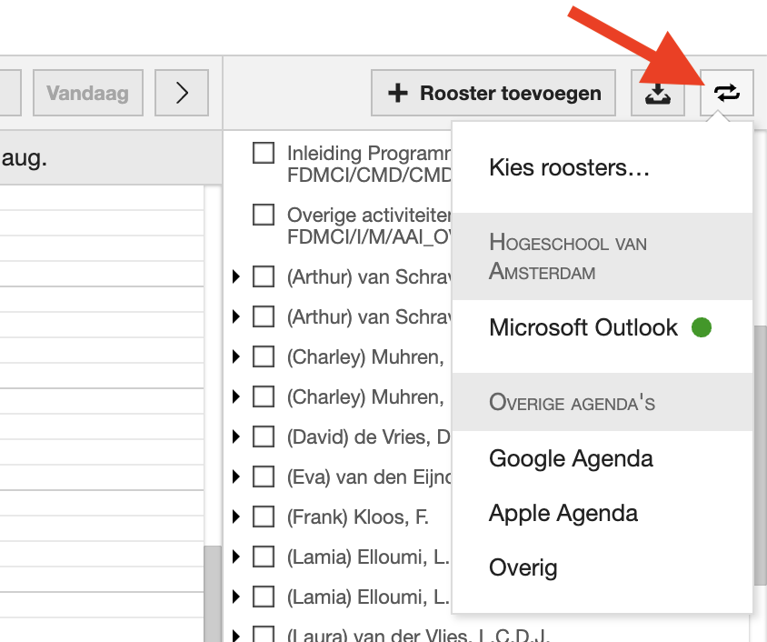

Digital Onboarding opdracht
Rooster toevoegen
Om het rooster te zien, moet met je hem "toevoegen". Dit doe je elk blok (kwartaal) opnieuw. Twee weken voor de start van een blok wordt het rooster van dat blok zichtbaar. Je kunt het rooster ook toevoegen aan je eigen agenda, zodat je altijd een overzicht hebt van je lessen.
Volg onderstaande stappen om je rooster toe te voegen:
- Ga naar https://rooster.hva.nl
- Klik op de optie "Inloggen" rechtsboven en log in met je HvA account.
- Druk op rooster toevoegen > 2026/2027 > Klas/Groep
- Zoek naar je klas bijvoorbeeld: "Blauw" en selecteer jouw klas
- Klik op "Roosters toevoegen"
-
Maak een screenshot van je rooster in de eerste lesweek die op 31 augustus 2026 begint.
- Op Windows:
- Druk tegelijkertijd op ⊞ Win + Shift + S. Gebruik dan je muis om een rechthoekig gebied te selecteren. Een screenshot wordt automatisch opgeslagen in het klembord. Open het klembord om het screenshot te bekijken en op te slaan.
- Op Mac:
- Druk tegelijkertijd op ⌘ Cmd + Shift + 4. Gebruik dan je muis om een rechthoekig gebied te selecteren. Een screenshot wordt automatisch opgeslagen op je bureaublad.
Optioneel:
Je kunt ook je rooster toevoegen aan je eigen agenda, zodat je altijd een overzicht hebt van je lessen. Klik hiervoor rechtsboven op de knop voor "Agenda koppelen" en kies met welke agenda je het rooster wilt koppelen. Volg de stappen.

Is het gelukt om je rooster toe te voegen en een screenshot te maken?
Probeer de stappen opnieuw te volgen en vraag het aan een klasgenoot, raadpleeg de Newbiegids of vraag je Leercoach.
Top, je hebt je rooster toegevoegd.